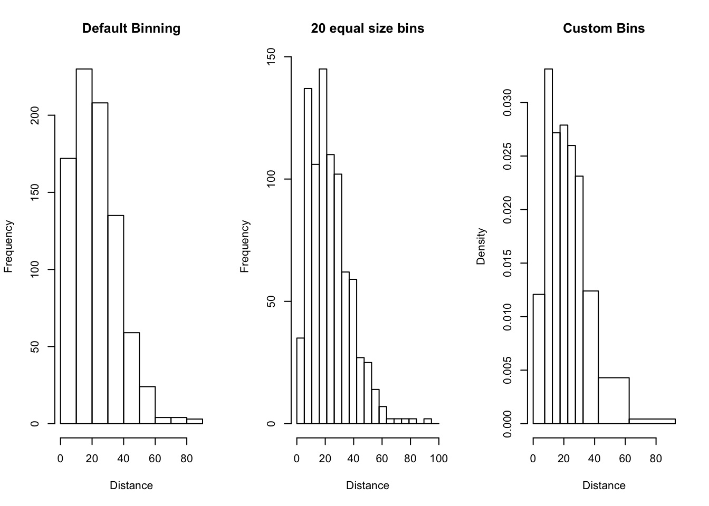
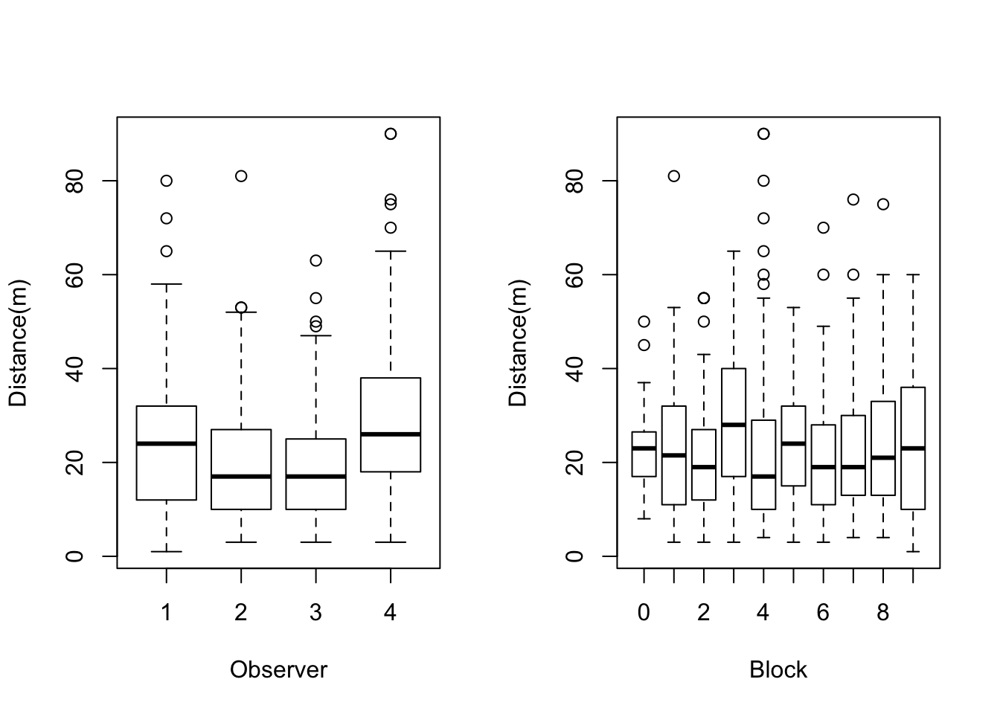
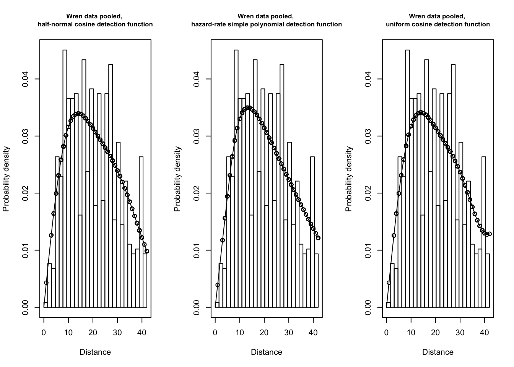
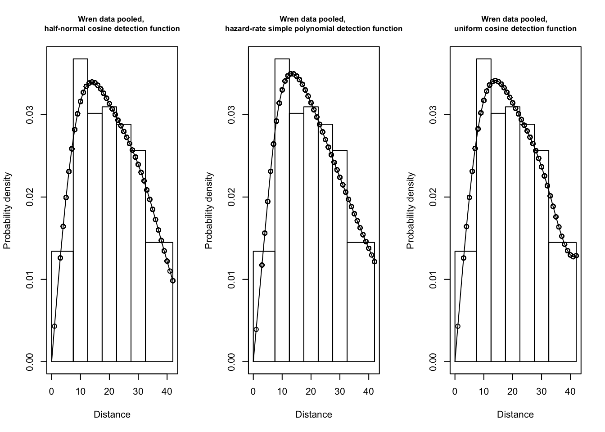
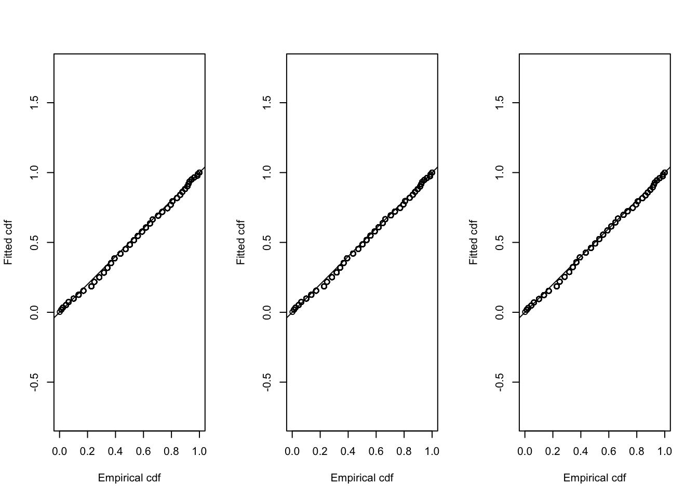
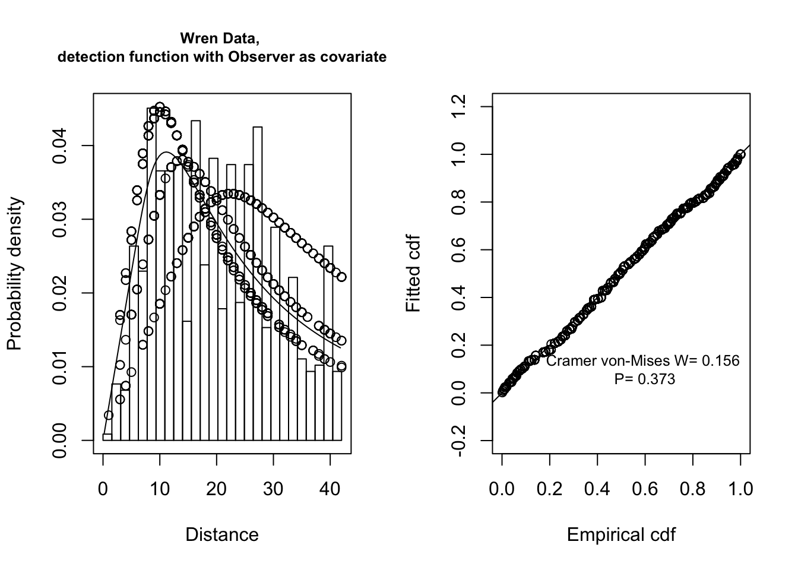
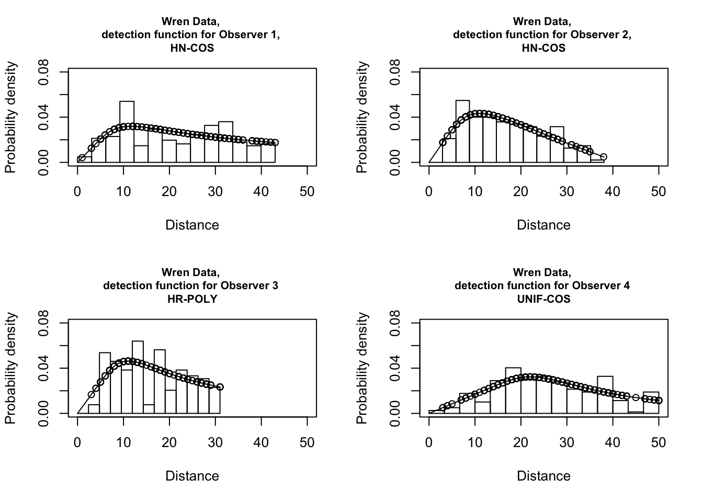

House Wren Distance Sampling Analysis
Joe Kolowski, Ph.D.
Project Description and Context

In this module, we will import point transect data on individual house wrens (Troglodytes aedon). The data were collected from 155 points, with 14-16 points within each of 10 study blocks. The blocks were 16 hectares each and were situated in riparian vegetation along 30km of South Platte River bottomland near Crook, Colorado, USA. The data were collected by 4 observers, who each visited each point. The study is used as an illustrative example in section 8.6 of the Buckland et al. (2001) text and this is one of the Sample Projects provided with the program DISTANCE. Here we will conduct a similar analysis of this data set using the R package “Distance”.
Exercise Objectives
- Become familiar with data import and formatting for point transect data when using this package
- Learn how to explore your data visually to inform the analytical approach and identify potential issues
- Practice basic Conventional Distance Sampling (CDS) analysis to estimate density
- Practice use of a covariate to inform detection function modeling, and the use of model selection to compare evidence for hypotheses about detection processes
- Learn to interpret results from a distance sampling analysis and use these results to make conclusions
Libraries/Setup
library(Distance)Data Import and Exploration
With the package Distance, we can bring in our data as a single “flatfile” format. This is the same format we can use to import into the Windows program DISTANCE. A .csv format is generally the most straightforward way to import data into R. Using the head and summary functions, you can see that we have 5 columns of data, indicating our block ID (0-9), the area of each block, which are all 16 hectares, our point IDs (1-16), our distance of each observation in meters, the ID of each observer, and the total effort at each point, which was 4 repeats. We can also see our maximum distance observed was 90 meters.
wrendata <-
read.csv('https://www.dropbox.com/s/0i2v2xik5h1vs5v/HouseWrenData.csv?dl=1')
head(wrendata)## Block Area Points Measured.Distance Observer Effort
## 1 0 16 1 12 1 4
## 2 0 16 1 10 1 4
## 3 0 16 1 24 2 4
## 4 0 16 1 28 3 4
## 5 0 16 1 24 4 4
## 6 0 16 1 24 4 4summary(wrendata)## Block Area Points Measured.Distance
## Min. :0.000 Min. :16 Min. : 1.000 Min. : 1.00
## 1st Qu.:2.000 1st Qu.:16 1st Qu.: 5.000 1st Qu.:12.00
## Median :4.000 Median :16 Median : 9.000 Median :21.00
## Mean :4.567 Mean :16 Mean : 8.793 Mean :23.53
## 3rd Qu.:7.000 3rd Qu.:16 3rd Qu.:13.000 3rd Qu.:31.00
## Max. :9.000 Max. :16 Max. :16.000 Max. :90.00
## NA's :10
## Observer Effort
## Min. :1.000 Min. :4
## 1st Qu.:1.000 1st Qu.:4
## Median :3.000 Median :4
## Mean :2.565 Mean :4
## 3rd Qu.:4.000 3rd Qu.:4
## Max. :4.000 Max. :4
## NA's :10The R package we will be using requires us to name some of our critical data columns in a particular way. Let’s do this now. “Region”" refers to a stratum, which may be a survey period, or a geographic region. “Sample”" refers to a point or transect.
names(wrendata) <-
c("Region.Label",
"Area",
"Sample.Label",
"distance",
"Obs",
"Effort")We should also make sure R is reading our covariates as we want. We can see that observer and block are read by R as integers, but these are really categorical variables, so we need to change them to factors in R.
str(wrendata)## 'data.frame': 849 obs. of 6 variables:
## $ Region.Label: int 0 0 0 0 0 0 0 0 0 0 ...
## $ Area : int 16 16 16 16 16 16 16 16 16 16 ...
## $ Sample.Label: int 1 1 1 1 1 1 1 2 2 2 ...
## $ distance : int 12 10 24 28 24 24 24 30 11 14 ...
## $ Obs : int 1 1 2 3 4 4 4 1 3 4 ...
## $ Effort : int 4 4 4 4 4 4 4 4 4 4 ...wrendata$Region.Label <-
as.factor(wrendata$Region.Label)
wrendata$Obs <-
as.factor(wrendata$Obs)
str(wrendata)## 'data.frame': 849 obs. of 6 variables:
## $ Region.Label: Factor w/ 10 levels "0","1","2","3",..: 1 1 1 1 1 1 1 1 1 1 ...
## $ Area : int 16 16 16 16 16 16 16 16 16 16 ...
## $ Sample.Label: int 1 1 1 1 1 1 1 2 2 2 ...
## $ distance : int 12 10 24 28 24 24 24 30 11 14 ...
## $ Obs : Factor w/ 4 levels "1","2","3","4": 1 1 2 3 4 4 4 1 3 4 ...
## $ Effort : int 4 4 4 4 4 4 4 4 4 4 ...Now let’s look at our data, and some of our potential covariates. First let’s just look at the distance data. Note that we can play around with how our histograms are viewed by changing the breaks for the bins. In the third example, you can see we can set custom bin sizes that may help make the pattern more clear, and address some potential issues with the data. Many bird studies will actually analyze their data in specific distance bins, or even collect the data that way. We’ll show later how to indicate that your data were collected in bins, and how to bin the data after it was collected. Here this is simply for visualization purposes. Note that using 20 equal-sized bins we can see some potential rounding errors, with unexpectedly high numbers of observations in the bins at 10m and 20m.
par(mfrow=c(1,3))
hist(wrendata$distance,
main="Default Binning",
xlab = "Distance")
hist(wrendata$distance,
breaks = seq(0,100, length.out = 20),
main="20 equal size bins",
xlab = "Distance")
hist(wrendata$distance,
breaks = c(0.0, 7.5, 12.5, 17.5, 22.5, 27.5, 32.5, 42.5, 62.5, 92.5),
main="Custom Bins",
xlab = "Distance")
Now let’s investigate our potential strata and covariates, observer and block, relative to observed distances. We can see that the distance observations across the 4 observers are fairly consistent, with perhaps the exception of observer 4, who tends to record birds at further distances.
par(mfrow=c(1,2))
boxplot(
formula = wrendata$distance~wrendata$Obs,
xlab="Observer",
ylab="Distance(m)")
boxplot(
formula = wrendata$distance~wrendata$Region.Label,
xlab="Block",
ylab="Distance(m)")
Data Analysis - Single Pooled Detection Function, for all Observers and all Blocks
We can approach our analysis here in a number of ways, since our data were collected in 10 different geographic regions (i.e. Blocks) and we may want to investigate whether detection processes vary across those regions. In addition, we may want to try to account for potential variation across our 4 observers. Let’s first start with a basic analysis that essentially ignores all this potential variation.
We’ll begin the analysis by testing 4 different key function and adjustment combinations that tend to do well with animal observation data. This is meant to identify a detection function shape that best fits our collected distance data. As is generally good practice, we will truncate the furthest 10% of observations. One could also view the histograms above, and decide on a custom truncation value.
Note also that it is here, in the use of the ds function, that one would indicate that their data was collected in bins and/or that it should be analyzed in bins. You would use the argument cutpoints and provide a vector of bin start and end distances.
wren.hn.herm <-
ds(wrendata,
truncation="10%",
transect="point",
key="hn",
adjustment="herm",
convert.units = 0.01)
wren.hn.cos <-
ds(wrendata,
truncation="10%",
transect="point",
key="hn",
adjustment="cos",
convert.units = 0.01)
wren.uni.cos <-
ds(wrendata,
truncation="10%",
transect="point",
key="unif",
adjustment="cos",
convert.units = 0.01)
wren.haz.simp <-
ds(wrendata,
truncation="10%",
transect="point",
key="hr",
adjustment="poly",
convert.units = 0.01)This conversion value of 0.01 is to get the density results in birds per hectare (100x100m). This can be a bit confusing, but in practice here your sampled area (in this case the sizes of your circles, determined by distances recorded in meters) will be multipled by your conversion number. And we want this conversion to match our unit for area, which is hectares. To get meters to match hectares (100m square) we need to bring meters to that same scale, therefore multiply by 0.01.
We can review the AIC values of these 4 models by using the function AIC.
AIC(wren.hn.herm)## 'log Lik.' 5524.941 (df=1)AIC(wren.hn.cos)## 'log Lik.' 5517.709 (df=2)AIC(wren.haz.simp)## 'log Lik.' 5516.095 (df=3)AIC(wren.uni.cos)## 'log Lik.' 5516.567 (df=3)We can also use the summarize_ds_models function to look at a summary table of the model results like this:
summary1 <-
summarize_ds_models(
wren.haz.simp,
wren.uni.cos,
wren.hn.cos,
wren.hn.herm,
output = "plain")| Model | Key function | Formula | C-vM \(p\)-value | Average detectability | se(Average detectability) | Delta AIC |
|---|---|---|---|---|---|---|
| wren.haz.simp | Hazard-rate with simple polynomial adjustment term of order 2 | ~1 | 0.4105046 | 0.2889584 | 0.0323858 | 0.0000000 |
| wren.uni.cos | Uniform with cosine adjustment terms of order 1,2,3 | NA | 0.4541816 | 0.2624159 | 0.0221951 | 0.4719736 |
| wren.hn.cos | Half-normal with cosine adjustment term of order 2 | ~1 | 0.4392924 | 0.2618924 | 0.0221206 | 1.6137685 |
| wren.hn.herm | Half-normal | ~1 | 0.0410787 | 0.3350738 | 0.0138856 | 8.8456833 |
Three of these models are quite close in AIC value. We can plot them to visually inspect the fit of the detection function. We must plot as a probability density function (pdf), as opposed to the default setting, because these are circular points. Note that the plot function automatically recognizes that our model results are a dsmodel object, and creates an essentially customized plot with many useful default settings.
par(mfrow=c(1,3))
plot(wren.hn.cos,
main="Wren data pooled, \nhalf-normal cosine detection function",
pdf = T)
plot(wren.haz.simp,
main="Wren data pooled, \nhazard-rate simple polynomial detection function",
pdf = T)
plot(wren.uni.cos,
main="Wren data pooled, \nuniform cosine detection function",
pdf = T)
All three seem to be very similar in visual fit, though the default binning may not be ideal for assessing fit. We can manually alter the bins as we did for the histograms above.
par(mfrow=c(1,3))
plot(wren.hn.cos,
main="Wren data pooled, \nhalf-normal cosine detection function",
breaks = c(0.0, 7.5, 12.5, 17.5, 22.5, 27.5, 32.5, 42.5),
pdf = T)
plot(wren.haz.simp,
main="Wren data pooled, \nhazard-rate simple polynomial detection function",
breaks = c(0.0, 7.5, 12.5, 17.5, 22.5, 27.5, 32.5, 42.5),
pdf = T)
plot(wren.uni.cos,
main="Wren data pooled, \nuniform cosine detection function",
breaks = c(0.0, 7.5, 12.5, 17.5, 22.5, 27.5, 32.5, 42.5),
pdf = T)
Let’s proceed to the next step of comparing some diagnostic values. Although some of these are produced automatically by the summarize_ds_models function, we can get a more complete diagnostic summary with the ddf.gof function. This function takes a dsmodel object as its argument, and produces a QQ plot as well as a series of diagnostic tests. The most favored, is the Cramer-von-Mises test statistic, which uses the real data (as opposed to binned data like the chi-square test) and gives priority to the fit of the detection function at small distances. From the list created from the ddf.gof function, we will pull out the results of this test. The ‘W’ shown is the test statistic and a low p-value would indicate a significant departure from the expected detection function. Here we again only see minor variations in the plots, and the Cramer-von-Mises test.
par(mfrow=c(1,3))
fit.wren.hn.cos <-
ddf.gof(wren.hn.cos$ddf)
fit.wren.uni.cos <-
ddf.gof(wren.uni.cos$ddf)
fit.wren.haz.simp <-
ddf.gof(wren.haz.simp$ddf)
fit.wren.hn.cos$dsgof$CvM## $W
## [1] 0.134832
##
## $p
## [1] 0.4392924fit.wren.uni.cos$dsgof$CvM## $W
## [1] 0.130687
##
## $p
## [1] 0.4541816fit.wren.haz.simp$dsgof$CvM## $W
## [1] 0.1433457
##
## $p
## [1] 0.4105046Let’s move forward looking at the results of the top model then, just to summarize and interpret the results. One can easily use summary(wren.haz.simp) to view a summary of the input data and all the relevant results. You can also pick and choose elements of the dsmodel object. For example density estimates can be pulled with wren.haz.simp$dht$indviduals$D. Here I’m using the kable function from the knitr package just to create easily viewable tables in a markdown file. Although results are shown for each region/block, we are here just looking at the total value for density and abundance. Our density value here is 7.5661101 birds per hectare.
| Region | Area | CoveredArea | Effort | n | k | ER | se.ER | cv.ER |
|---|---|---|---|---|---|---|---|---|
| 0 | 16 | 35.46732 | 64 | 41 | 16 | 0.640625 | 0.1387608 | 0.2166022 |
| 1 | 16 | 35.46732 | 64 | 90 | 16 | 1.406250 | 0.1780610 | 0.1266212 |
| 2 | 16 | 35.46732 | 64 | 104 | 16 | 1.625000 | 0.1796988 | 0.1105839 |
| 3 | 16 | 35.46732 | 64 | 67 | 16 | 1.046875 | 0.1410872 | 0.1347699 |
| 4 | 16 | 35.46732 | 64 | 82 | 16 | 1.281250 | 0.1907701 | 0.1488937 |
| 5 | 16 | 35.46732 | 64 | 77 | 16 | 1.203125 | 0.2031250 | 0.1688312 |
| 6 | 16 | 35.46732 | 64 | 78 | 16 | 1.218750 | 0.1476817 | 0.1211748 |
| 7 | 16 | 33.25062 | 60 | 69 | 15 | 1.150000 | 0.1614665 | 0.1404056 |
| 8 | 16 | 31.03391 | 56 | 65 | 14 | 1.160714 | 0.1710647 | 0.1473789 |
| 9 | 16 | 33.25062 | 60 | 83 | 15 | 1.383333 | 0.2166667 | 0.1566265 |
| Total | 160 | 345.80641 | 624 | 756 | 156 | 1.211539 | 0.0571208 | 0.0471473 |
| Label | Estimate | se | cv | lcl | ucl | df |
|---|---|---|---|---|---|---|
| 0 | 4.000553 | 0.9756589 | 0.2438810 | 2.436151 | 6.569554 | 24.07309 |
| 1 | 8.781702 | 1.4849739 | 0.1690986 | 6.264559 | 12.310251 | 47.13550 |
| 2 | 10.147745 | 1.5977534 | 0.1574491 | 7.420692 | 13.876970 | 60.37415 |
| 3 | 6.537489 | 1.1459147 | 0.1752836 | 4.602575 | 9.285839 | 42.51742 |
| 4 | 8.001106 | 1.4911017 | 0.1863619 | 5.501649 | 11.636093 | 36.58018 |
| 5 | 7.513234 | 1.5225266 | 0.2026460 | 4.990447 | 11.311349 | 31.01386 |
| 6 | 7.610809 | 1.2562388 | 0.1650598 | 5.476174 | 10.577532 | 50.90054 |
| 7 | 7.181481 | 1.2901740 | 0.1796529 | 5.005118 | 10.304185 | 37.24439 |
| 8 | 7.248389 | 1.3420673 | 0.1851539 | 4.987312 | 10.534561 | 32.19833 |
| 9 | 8.638593 | 1.6637600 | 0.1925962 | 5.855786 | 12.743855 | 31.85267 |
| Total | 7.566110 | 0.9154200 | 0.1209895 | 5.972001 | 9.585736 | 886.54614 |
Data Analysis - Observer as a Covariate
In the analysis above, we assumed there was a single detection function, for all observers and all blocks. But we know from exploring our data that there seems to be some difference across our 4 observers. If this is true, then pooling the detection function across observers is not ideal, and we should attempt to create separate detection functions for each observer. To do this we will use Observer as a covariate. In this approach, a single key function and adjustment framework is used, but the parameters of the function can be independently assigned depending on observer. We now specify a model formula in our ds function, in this case indicating that the detection function varies by data in the column Obs.
wren.haz.simp.obs <-
ds(
wrendata,
truncation = "10%",
transect = "point",
key = "hr",
adjustment = "poly",
convert.units = 0.01,
formula = ~ Obs
)The AIC value here is well below the AIC of the best model above, which ignored the influence of the observers.
AIC(wren.haz.simp.obs)## 'log Lik.' 5461.98 (df=5)We can plot the results using a simple plot command. Since the model included a covariate, the plot will automatically show the detection function for each level of a factor covariate. We can also use the ddf.gof function to get some diagnostics. In this case we are using some additional code to put the results of the Cramer von-Mises text on the QQPlot. There is no indication here that we do not have a good fit to our data. Regarding the observers, we do see that one observer stands out, showing relatively low detection near the point center, and much more frequent detections at far distances.
par(mfrow=c(1,2))
plot(wren.haz.simp.obs,
main = "Wren Data, \ndetection function with Observer as covariate",
pdf = T)
covar.fit <-
ddf.gof(wren.haz.simp.obs$ddf)
message <-
paste(
"Cramer von-Mises W=",
round(covar.fit$dsgof$CvM$W, 3),
"\nP=",
round(covar.fit$dsgof$CvM$p, 3)
)
text(0.6, 0.1, message, cex=0.8)
Looking at the summary of the results, we see that the model coefficients are set up to view Observer 1 as the baseline. With this reference, Observer 4 is clearly different from Observer 1. Having used observer as a covariate, we now have a less-biased estimate of density across the study area, though the final estimate of density has not changed much, we do have a lower coefficient of variation. Our new density value is 7.56 birds per hectare with a coefficient of variation of 10%.
summary(wren.haz.simp.obs)##
## Summary for distance analysis
## Number of observations : 756
## Distance range : 0 - 42
##
## Model : Hazard-rate key function
## AIC : 5461.98
##
## Detection function parameters
## Scale coefficient(s):
## estimate se
## (Intercept) 2.8239416 0.09659739
## Obs2 -0.3360374 0.12030594
## Obs3 -0.3092654 0.12102420
## Obs4 0.4817249 0.12316220
##
## Shape coefficient(s):
## estimate se
## (Intercept) 0.9277387 0.08309576
##
## Estimate SE CV
## Average p 0.2889995 0.02399581 0.08303063
## N in covered region 2615.9214617 232.84407507 0.08901035
##
## Summary statistics:
## Region Area CoveredArea Effort n k ER se.ER cv.ER
## 1 0 16 35.46732 64 41 16 0.640625 0.13876079 0.21660221
## 2 1 16 35.46732 64 90 16 1.406250 0.17806103 0.12662117
## 3 2 16 35.46732 64 104 16 1.625000 0.17969882 0.11058389
## 4 3 16 35.46732 64 67 16 1.046875 0.14108720 0.13476987
## 5 4 16 35.46732 64 82 16 1.281250 0.19077010 0.14889373
## 6 5 16 35.46732 64 77 16 1.203125 0.20312500 0.16883117
## 7 6 16 35.46732 64 78 16 1.218750 0.14768174 0.12117476
## 8 7 16 33.25062 60 69 15 1.150000 0.16146649 0.14040565
## 9 8 16 31.03391 56 65 14 1.160714 0.17106475 0.14737886
## 10 9 16 33.25062 60 83 15 1.383333 0.21666667 0.15662651
## 11 Total 160 345.80641 624 756 156 1.211538 0.05712083 0.04714735
##
## Abundance:
## Label Estimate se cv lcl ucl df
## 1 0 62.70104 14.51222 0.23145106 38.93053 100.9856 19.94405
## 2 1 142.68431 21.61232 0.15146947 104.95664 193.9735 31.21710
## 3 2 153.18652 21.90726 0.14301034 114.62088 204.7280 31.45556
## 4 3 92.62931 16.34381 0.17644312 64.48191 133.0635 22.98344
## 5 4 138.30623 23.35521 0.16886592 98.08701 195.0168 27.75296
## 6 5 127.32966 24.44633 0.19199244 85.98416 188.5562 24.06492
## 7 6 121.02208 18.52586 0.15307836 88.79771 164.9405 33.07444
## 8 7 121.09111 20.50933 0.16937107 85.61120 171.2750 24.49231
## 9 8 109.60396 21.20176 0.19343977 73.41209 163.6383 19.26749
## 10 9 141.66135 26.21071 0.18502371 96.87279 207.1577 22.45913
## 11 Total 1210.21558 115.28765 0.09526207 1004.24009 1458.4379 810.28195
##
## Density:
## Label Estimate se cv lcl ucl df
## 1 0 3.918815 0.9070139 0.23145106 2.433158 6.311597 19.94405
## 2 1 8.917769 1.3507698 0.15146947 6.559790 12.123347 31.21710
## 3 2 9.574157 1.3692035 0.14301034 7.163805 12.795503 31.45556
## 4 3 5.789332 1.0214878 0.17644312 4.030119 8.316470 22.98344
## 5 4 8.644140 1.4597006 0.16886592 6.130438 12.188550 27.75296
## 6 5 7.958104 1.5278958 0.19199244 5.374010 11.784761 24.06492
## 7 6 7.563880 1.1578663 0.15307836 5.549857 10.308784 33.07444
## 8 7 7.568194 1.2818332 0.16937107 5.350700 10.704687 24.49231
## 9 8 6.850247 1.3251103 0.19343977 4.588256 10.227392 19.26749
## 10 9 8.853835 1.6381694 0.18502371 6.054549 12.947353 22.45913
## 11 Total 7.563847 0.7205478 0.09526207 6.276501 9.115237 810.28195Data Analysis - Observer as a Stratum
We could also treat each observer as completely separate, having separate detection functions entirely for each observer. This is what we might elect to do with Block, or if our study area was divided into a few main regions or habitat types. With this approach, we would not treat observer then as a covariate for our function parameters, but rather estimate 4 totally unique detection functions. We may have reason to think that observer 4 is so different, that we need to take this approach.
We will first need to create 4 new dataframes. Because the point that resulted in no bird observations from any observer listed “NA” as the observer, we need to bring these along in every dataset. We also need to reset the effort level to 1 for each separate data set.
wrendataObs1 <-
subset(wrendata,
wrendata$Obs=="1" | is.na(wrendata$Obs)
)
wrendataObs1$Effort <- 1
wrendataObs2 <-
subset(wrendata,
wrendata$Obs == "2" | is.na(wrendata$Obs))
wrendataObs2$Effort <- 1
wrendataObs3 <-
subset(wrendata,
wrendata$Obs == "3" | is.na(wrendata$Obs))
wrendataObs3$Effort <- 1
wrendataObs4 <-
subset(wrendata,
wrendata$Obs == "4" | is.na(wrendata$Obs))
wrendataObs4$Effort <- 1Now we can test which combination of key function and adjustments work best for each separate dataset. We’ll focus just on the 4 most common detection function models.
wren.hn.herm.obs1 <-
ds(
wrendataObs1,
truncation = "10%",
transect = "point",
key = "hn",
adjustment = "herm",
convert.units = 0.01
)
wren.hn.cos.obs1 <-
ds(
wrendataObs1,
truncation = "10%",
transect = "point",
key = "hn",
adjustment = "cos",
convert.units = 0.01
)
wren.unif.cos.obs1 <-
ds(
wrendataObs1,
truncation = "10%",
transect = "point",
key = "unif",
adjustment = "cos",
convert.units = 0.01
)
wren.haz.simp.obs1 <-
ds(
wrendataObs1,
truncation = "10%",
transect = "point",
key = "hr",
adjustment = "poly",
convert.units = 0.01
)
wren.hn.herm.obs2 <-
ds(
wrendataObs2,
truncation = "10%",
transect = "point",
key = "hn",
adjustment = "herm",
convert.units = 0.01
)
wren.hn.cos.obs2 <-
ds(
wrendataObs2,
truncation = "10%",
transect = "point",
key = "hn",
adjustment = "cos",
convert.units = 0.01
)
wren.unif.cos.obs2 <-
ds(
wrendataObs2,
truncation = "10%",
transect = "point",
key = "unif",
adjustment = "cos",
convert.units = 0.01
)
wren.haz.simp.obs2 <-
ds(
wrendataObs2,
truncation = "10%",
transect = "point",
key = "hr",
adjustment = "poly",
convert.units = 0.01
)
wren.hn.herm.obs3 <-
ds(
wrendataObs3,
truncation = "10%",
transect = "point",
key = "hn",
adjustment = "herm",
convert.units = 0.01
)
wren.hn.cos.obs3 <-
ds(
wrendataObs3,
truncation = "10%",
transect = "point",
key = "hn",
adjustment = "cos",
convert.units = 0.01
)
wren.unif.cos.obs3 <-
ds(
wrendataObs3,
truncation = "10%",
transect = "point",
key = "unif",
adjustment = "cos",
convert.units = 0.01
)
wren.haz.simp.obs3 <-
ds(
wrendataObs3,
truncation = "10%",
transect = "point",
key = "hr",
adjustment = "poly",
convert.units = 0.01
)
wren.hn.herm.obs4 <-
ds(
wrendataObs4,
truncation = "10%",
transect = "point",
key = "hn",
adjustment = "herm",
convert.units = 0.01
)
wren.hn.cos.obs4 <-
ds(
wrendataObs4,
truncation = "10%",
transect = "point",
key = "hn",
adjustment = "cos",
convert.units = 0.01
)
wren.unif.cos.obs4 <-
ds(
wrendataObs4,
truncation = "10%",
transect = "point",
key = "unif",
adjustment = "cos",
convert.units = 0.01
)
wren.haz.simp.obs4 <-
ds(
wrendataObs4,
truncation = "10%",
transect = "point",
key = "hr",
adjustment = "poly",
convert.units = 0.01
)We can now sum the AIC values across the best models for each observer. This AIC is comparable then to our other AIC values.
full.aic <- AIC(wren.hn.cos.obs1) +
AIC(wren.hn.cos.obs2) +
AIC(wren.haz.simp.obs3) +
AIC(wren.unif.cos.obs4)
full.aic## 'log Lik.' 5507.155 (df=4)Our new summed AIC value is now 5507.155. This approach then, where each observer gets their own detection function, is not worth the extra complexity, and the better approach is to use observer as a covariate. We can still look at the detection functions for each observer though, just out of curiosity. Here I am holding the limits of the x and y axes constant to help in comparing across figures.
par(mfrow=c(2,2))
plot(
wren.haz.simp.obs1,
main = "Wren Data, \ndetection function for Observer 1, \nHN-COS",
xlim = c(0, 50),
ylim = c(0, 0.08),
pdf = T
)
plot(
wren.haz.simp.obs2,
main = "Wren Data, \ndetection function for Observer 2, \nHN-COS",
xlim = c(0, 50),
ylim = c(0, 0.08),
pdf = T
)
plot(
wren.haz.simp.obs3,
main = "Wren Data, \ndetection function for Observer 3 \nHR-POLY",
xlim = c(0, 50),
ylim = c(0, 0.08),
pdf = T
)
plot(
wren.haz.simp.obs4,
main = "Wren Data, \ndetection function for Observer 4 \nUNIF-COS",
xlim = c(0, 50),
ylim = c(0, 0.08),
pdf = T
)
Analysis Removing Observer 4
Finally, if we think observer 4 may not have collected the data properly, we can exclude observer 4, and rerun the analysis, with observer as a covariate. We will first create a new dataset, removing all observations from observer 4, and changing the effort level to 3.
wrendata_new <-
subset(wrendata, wrendata$Obs != "4")
wrendata_new$Effort <- 3We would probably at this point re-assess what the best detection function might be for these three observers, but let’s move forward with the hazard rate, simply polynomial.
wren.haz.simp.no4 <-
ds(
wrendata_new,
truncation = "10%",
transect = "point",
key = "hr",
adjustment = "poly",
convert.units = 0.01,
formula = ~ Obs
)At this point the AIC value is no longer comparable, since we are working with a different data set, but we can now look at the density and variance to compare with our previous estimate.
summary(wren.haz.simp.no4)##
## Summary for distance analysis
## Number of observations : 526
## Distance range : 0 - 39
##
## Model : Hazard-rate key function
## AIC : 3741.519
##
## Detection function parameters
## Scale coefficient(s):
## estimate se
## (Intercept) 2.7702774 0.1135118
## Obs2 -0.3179695 0.1370310
## Obs3 -0.2769325 0.1374001
##
## Shape coefficient(s):
## estimate se
## (Intercept) 0.8568395 0.0949332
##
## Estimate SE CV
## Average p 0.2649582 0.02734109 0.1031902
## N in covered region 1985.2190758 218.07694915 0.1098503
##
## Summary statistics:
## Region Area CoveredArea Effort n k ER se.ER cv.ER
## 1 0 16 15.76860 33 26 11 0.7878788 0.13686776 0.1737168
## 2 1 16 22.93614 48 62 16 1.2916667 0.16907975 0.1309005
## 3 2 16 21.50263 45 69 15 1.5333333 0.18344153 0.1196358
## 4 3 16 18.63561 39 37 13 0.9487179 0.14044168 0.1480331
## 5 4 16 21.50263 45 66 15 1.4666667 0.18053419 0.1230915
## 6 5 16 18.63561 39 56 13 1.4358974 0.18637575 0.1297974
## 7 6 16 21.50263 45 57 15 1.2666667 0.12682530 0.1001252
## 8 7 16 20.06912 42 57 14 1.3571429 0.14602710 0.1075989
## 9 8 16 17.20210 36 40 12 1.1111111 0.20651564 0.1858641
## 10 9 16 20.06912 42 56 14 1.3333333 0.22374327 0.1678075
## 11 Total 160 197.82420 414 526 138 1.2705314 0.05618328 0.0442203
##
## Abundance:
## Label Estimate se cv lcl ucl df
## 1 0 103.5801 20.12712 0.1943146 69.41853 154.5529 21.14723
## 2 1 163.2258 28.38976 0.1739294 115.00568 231.6638 35.90419
## 3 2 184.8011 28.81998 0.1559513 135.11616 252.7561 40.63657
## 4 3 119.8907 22.77508 0.1899653 81.30721 176.7837 24.29969
## 5 4 186.7482 30.71869 0.1644926 134.17539 259.9201 38.58494
## 6 5 189.4209 31.69024 0.1673006 135.20806 265.3709 35.41218
## 7 6 155.6024 23.97947 0.1541074 114.42618 211.5957 52.37598
## 8 7 166.2319 26.27893 0.1580859 120.85939 228.6381 35.61538
## 9 8 142.0026 30.48870 0.2147053 91.12011 221.2984 19.42900
## 10 9 174.8055 34.85366 0.1993853 116.47448 262.3491 25.80749
## 11 Total 1586.3091 178.38197 0.1124510 1272.87988 1976.9160 633.97071
##
## Density:
## Label Estimate se cv lcl ucl df
## 1 0 6.473755 1.257945 0.1943146 4.338658 9.659555 21.14723
## 2 1 10.201610 1.774360 0.1739294 7.187855 14.478985 35.90419
## 3 2 11.550067 1.801248 0.1559513 8.444760 15.797256 40.63657
## 4 3 7.493170 1.423442 0.1899653 5.081701 11.048978 24.29969
## 5 4 11.671760 1.919918 0.1644926 8.385962 16.245004 38.58494
## 6 5 11.838808 1.980640 0.1673006 8.450504 16.585681 35.41218
## 7 6 9.725147 1.498717 0.1541074 7.151636 13.224733 52.37598
## 8 7 10.389496 1.642433 0.1580859 7.553712 14.289879 35.61538
## 9 8 8.875161 1.905544 0.2147053 5.695007 13.831147 19.42900
## 10 9 10.925346 2.178354 0.1993853 7.279655 16.396819 25.80749
## 11 Total 9.914432 1.114887 0.1124510 7.955499 12.355725 633.97071We can see that our new density estimate of 9.91 birds per hectare is much higher than our original estimate with no covariates, 7.57, and our estimate when we accounted for observer, but kept observer 4 in the data 7.56. Our new estimate is much higher now, because the effective detection distance (EDD) estimated for observer 4 was likely artificially high, meaning we were assuming observer 4 covered a lot more area than he/she actually did. This falsely lowered the estimated density.